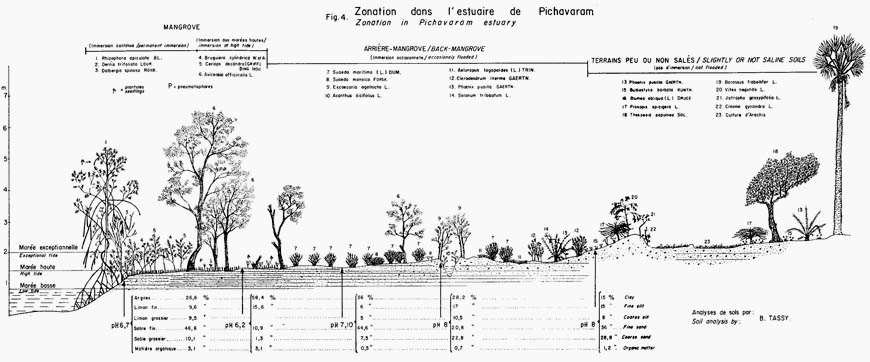

Mangrove.
Forested wetland growing along tidal mudflats and along shallow water coastal areas extending inland along rivers, streams and their tributaries where the water is generally brackish and composed mainly of Rhizopora, Bruguiera, Ceriops, Avicenia, Aegiceras, and Nipa species